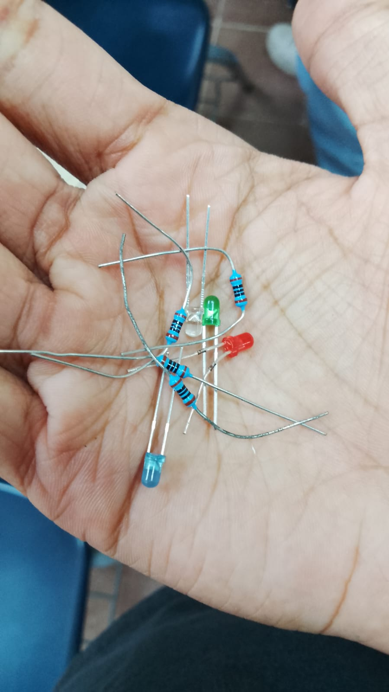

Nuestra meta
Vamos avanzando por partes: primero investigar, después simular, y solo al final armar algo físico. Todavía nos faltan varias semanas de proyecto, así que esto es un corte de avance, no el resultado final.
Cómo hemos trabajado
- Investigamos proyectos parecidos ya hechos por otros.
- Simulamos en Tinkercad y en Fritzing antes de conectar nada.
- Armamos en protoboard solo lo que ya teníamos claro.
Con qué hemos trabajado
Arduino UNO / Duemilanove
Puente H (L293D)
Sensor HC-SR04
LEDs y resistencias
Motores DC
Protoboard
EasyEDA (en teoría)

Algunos de los componentes reales que hemos usado